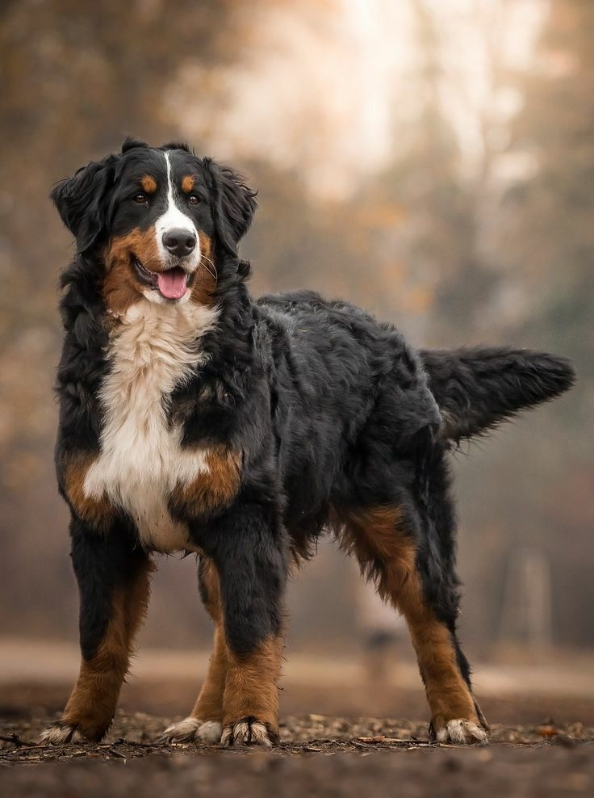

The Bernese Mountain Dog

Affectionately known as "Berners, " these majestic dogs have a way of capturing hearts with their charming looks and delightful personalities. Despite their robust build, they're known for their sweet and friendly demeanor. They are also known for their loyalty and affection, they form strong bonds with their families and are known to be especially gentle with children, making them fantastic family dogs. Whether they 're gently nudging you for attention or leaning in for a cuddle, Berners are masters at melting hearts with their affectionate gestures.